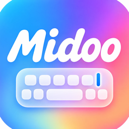

Midoo翻译输入法 隐私政策
生效日期：2026 年 10 月 14 日
概述
Midoo翻译输入法（以下简称“本应用”）由 Hong Kong Omega AI Technology Limited（以下简称“我们”）提供。我们深知输入法会接触到你输入的文字，因此本应用遵循“能在本机完成的就不上传”的原则：
- 拼音输入、候选词排序、个人词库、单词释义等核心功能完全在你的设备本地运行，不开启“允许完全访问”也可以正常打字。
- 打字、翻译等功能不需要注册账号；只有你主动使用“跨设备粘贴”时才需要用邮箱注册（可选，见下文）。本应用不收集姓名、手机号、通讯录、位置等个人信息。
- 本应用不含广告，不使用任何第三方统计或追踪 SDK，不会跨 App 追踪你。我们自己的“匿名使用统计”收集什么、怎么关闭，见下文。
哪些情况下会有数据离开你的设备
只有在你为键盘开启了“允许完全访问”并使用以下联网功能时，相关内容才会通过加密连接（HTTPS）发送到服务器处理：
| 功能 | 发送的内容 | 用途 |
|---|---|---|
| 英语学习模式下的整句英文提示 | 当前正在输入的整句候选（或较长的首选词） | 生成对应英文，显示在候选词上方 |
| 整句翻译、逐词讲解 | 你点击翻译的那一句文字 | 翻译成英文并讲解 |
| 帮我回复、AI 帮写 | 你复制或主动提交的消息文字 | 生成回复建议 |
| 英文朗读 | 要朗读的英文短语或句子（2 万多个常用单词的发音已内置在 App 里，不联网） | 合成语音并播放 |
翻译类请求（整句英文提示、整句翻译、帮写里的中英互译）发送至我们的服务器（ime.midooai.cn），经我们在新加坡的中转服务器交给第三方大语言模型服务处理；帮我回复、AI 帮写等其他文字请求发送至我们的服务器（dify.midooai.cn），再由我们接入的第三方大语言模型服务处理；英文朗读的文字发送至第三方语音合成服务 MiniMax。请求中附带一个在本机随机生成的匿名标识（不与你的身份、设备序列号或广告标识关联），仅用于服务稳定性统计和防止滥用。
我们不会把你的输入内容用于广告、出售或与无关第三方共享，也不会用于识别你的身份。服务器日志仅用于排查故障和防止滥用，只在必要期限内保留；第三方模型服务商按其自身政策处理 API 数据。
密码框等安全输入场景下，iOS 会自动切换为系统键盘，本应用无法获取其中内容。
匿名使用统计（可关闭）
为了改进输入法，本应用默认开启“匿名使用统计”，数据通过 HTTPS 发送到我们自己的服务器（ime.midooai.cn），不经过任何第三方统计平台。键盘只有在开启“允许完全访问”后才能联网上报。统计包含两类内容：
- 使用次数：例如打了多少字、按键和选词的次数、选的是第几个候选、各功能用了几次、联网请求是否成功及耗时，以及机型、系统版本、App 版本和设置开关状态。
- 候选纠错样例：只有当排在第一位的候选不是你想要的、你改选了别的词时，才会记录这一次输入的拼音、当时排第一的候选词和你最终选的词（不含前后文，较长的内容不记录）。这些片段偶尔可能包含人名、地名等词语，仅用于提高首选准确率，最长保留 180 天。
统计使用一个匿名的设备标识来区分设备：新版本用的是 iOS 系统提供的“厂商设备标识”（identifierForVendor），早期版本用的是在本机随机生成的标识。它不是广告标识，不能用来在其他开发者的 App 里识别你，也不与你的身份、账号关联；把本应用删除后重新安装，这个标识可能会变。除上述样例外，你输入的其他内容、剪贴板和聊天记录都不会被统计上报。
如何关闭：打开 Midoo App ›「设置」›「智能与隐私」，关闭「匿名使用统计」。关闭后不再记录，也不再上报。
此外，App 会不定期向我们的服务器查询是否有新版本，请求中只包含 App 版本、系统版本和上述匿名标识。
账号与跨设备粘贴（可选）
如果你在 App 里用邮箱注册并登录（目前只用于“跨设备粘贴”，在 Mac 和 iPhone 之间互传复制的文字），我们会在自己的服务器（ime.midooai.cn）上保存：
- 邮箱地址和密码的加盐哈希值（不保存密码原文）；
- 登录凭证的哈希值，以及每台已登录设备的名称、平台和上文所述的匿名设备标识，用于在你的设备之间传送内容；
- 你复制的文字（已端到端加密）：加密密钥由你的邮箱和密码在你自己的设备上计算得出，只保存在你的设备上，服务器只收到并保存密文，我们无法读取内容。每个账号只保留最新的一条，1 小时后不再提供并会被清除；密码管理器标记为隐藏或临时的内容不会发送。
你可以随时在 App 的「设置 › 账号」里退出登录或删除账号；删除后，你的账号信息、登录凭证和剪贴板内容会从服务器上删除。
保存在你设备上的数据
- 个人词库（你造的词、常用词频率）、自定义短语、设置项：保存在本机 App 与键盘共享的存储中，用于让候选词更懂你。
- 剪贴板：你复制内容后，键盘会显示“粘贴 / 帮我回复 / 翻译”快捷条并预览复制的文字（系统可能会询问是否允许粘贴），内容不会被自动上传。
- 你可以在 App 内清空个人词库，或直接删除本应用来移除全部本地数据。
权限说明
- 允许完全访问：用于联网翻译、帮我回复、英文朗读、匿名使用统计，以及在 App 与键盘之间同步设置和词库。不开启时仍可正常离线打字。
儿童隐私
本应用面向一般用户，不会主动收集儿童个人信息。如你认为我们无意中处理了儿童的信息，请联系我们删除。
你的权利与联系我们
除非你注册了账号，我们不保存可识别你身份的信息，通常无法按人检索数据；如对隐私有任何疑问、需要删除服务器日志或统计数据（请在邮件中说明，我们会告诉你如何提供本机的匿名标识），或希望行使适用法律下的其他权利，请发邮件至 coremini@163.com，我们会在 15 个工作日内回复。
本政策如有更新，我们会在此页面公布并更新生效日期。
Privacy Policy (English summary)
Midoo Translate Keyboard is provided by Hong Kong Omega AI Technology Limited. Core typing features (pinyin input, candidate ranking, personal dictionary, word glosses, built-in word pronunciations) run entirely on your device and work without “Allow Full Access”. No account is required for typing or translation; we do not collect names, phone numbers, contacts or location; there are no ads and no third-party analytics or tracking SDKs.
Online features. Only when Full Access is enabled and you use online features is content sent over HTTPS: the sentence candidate being composed (English-learning hints), text you choose to translate, and messages you copy for “Reply for me” are processed by our servers (translation requests go to ime.midooai.cn and are passed through our relay server in Singapore; other requests go to dify.midooai.cn) and the third-party large language model providers they connect to; English phrases to be read aloud are sent to the third-party text-to-speech provider MiniMax. Requests carry a random, anonymous on-device identifier used only for reliability and abuse prevention.
Anonymous usage statistics (on by default, can be turned off). To improve the keyboard we send to our own server (ime.midooai.cn): usage counts (characters typed, keys pressed, which candidate position was chosen, feature usage, request success and latency), device model, OS version, app version and setting switches; and, only when the first candidate was not what you wanted and you picked another one, the pinyin typed for that input, the candidate that was ranked first and the word you chose (no surrounding text; kept for up to 180 days). These are tied to an anonymous device identifier (the vendor identifier provided by iOS, identifierForVendor; earlier versions used a random on-device identifier). It is not the advertising identifier, cannot be used to recognise you in other developers' apps, and is not linked to your identity. Turn it off in the Midoo app › Settings › Intelligence & Privacy › Anonymous usage statistics. The app also checks our server for new versions (app version, OS version and the anonymous identifier only).
Optional account and cross-device paste. If you sign up with an email address to use cross-device paste (sending copied text between your Mac and iPhone), our server stores your email, a salted hash of your password (never the password itself), hashed sign-in tokens with each signed-in device's name, platform and anonymous identifier, and the copied text end-to-end encrypted — the key is derived on your devices from your email and password and never leaves them, so we cannot read the content. Only the latest item per account is kept, and it is removed after one hour. You can sign out or delete your account at any time in the app (Settings › Account); deleting it removes your account data from our server.
We never sell your data or use it for advertising or tracking. Server logs are used only for troubleshooting and abuse prevention and are kept no longer than necessary. Your personal dictionary and settings stay on your device; deleting the app removes them. Contact: coremini@163.com.